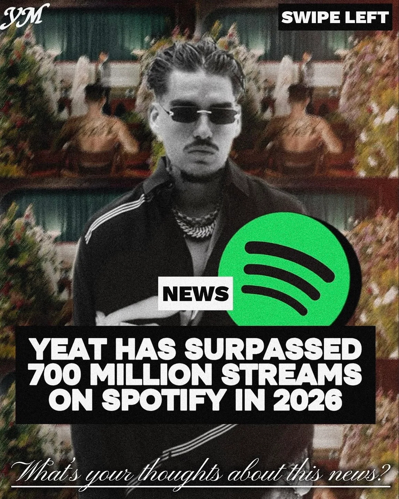
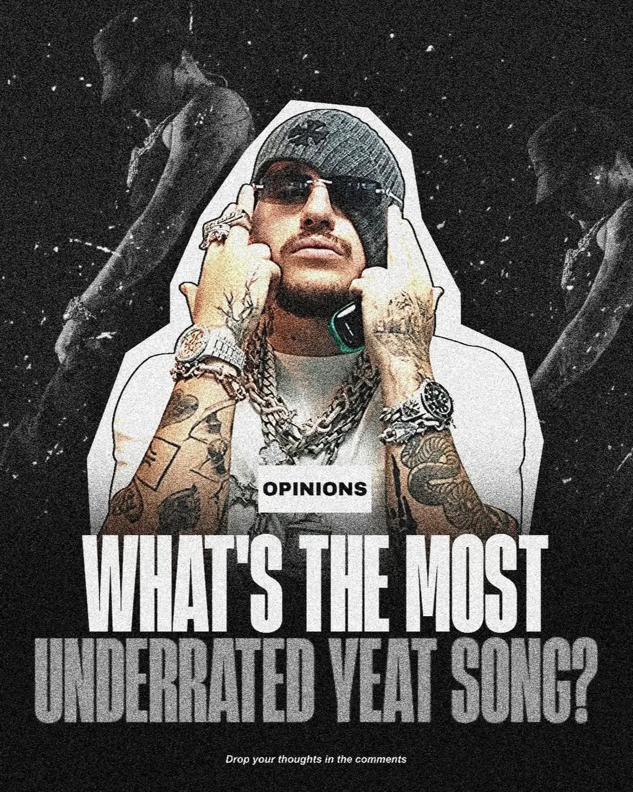
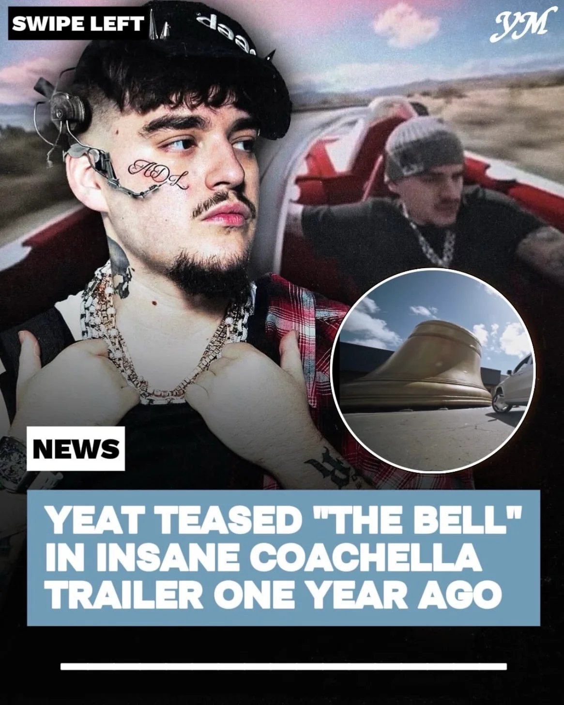
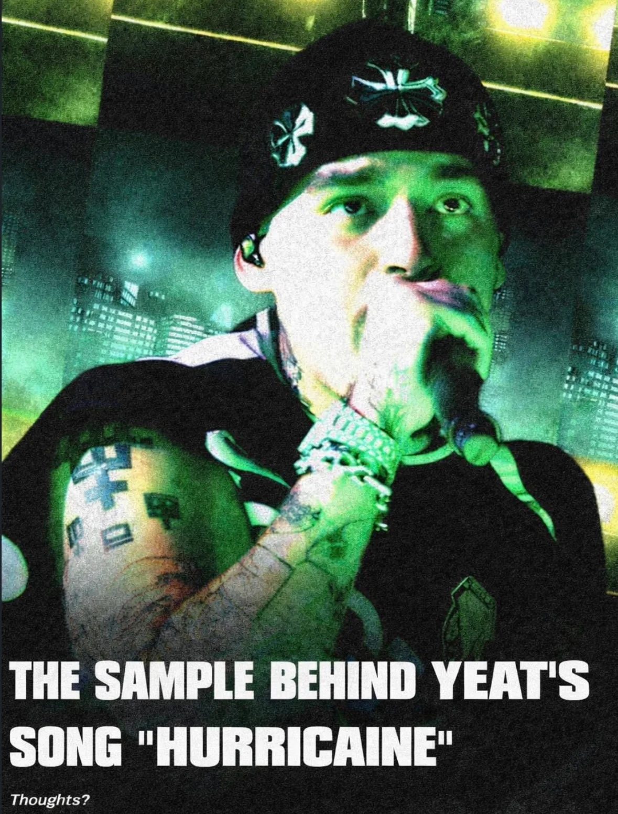
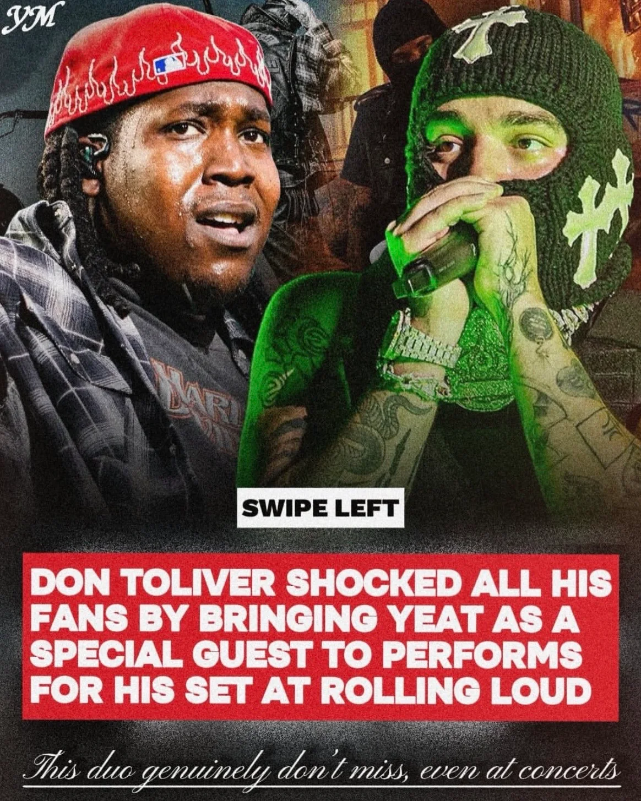
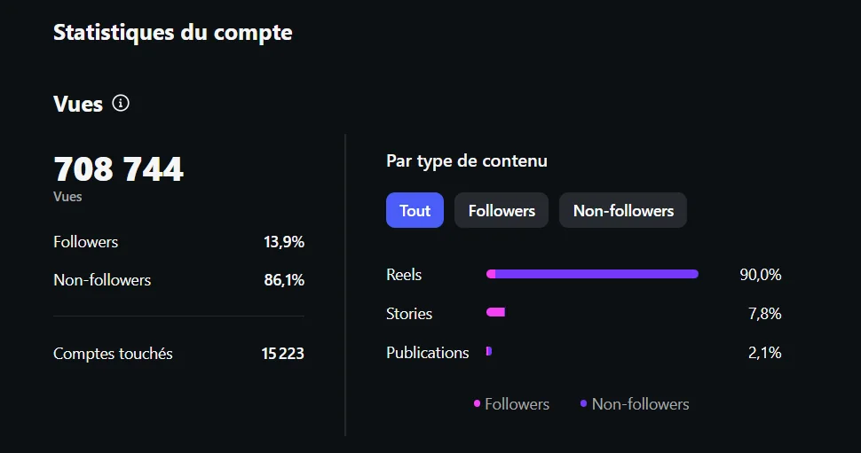
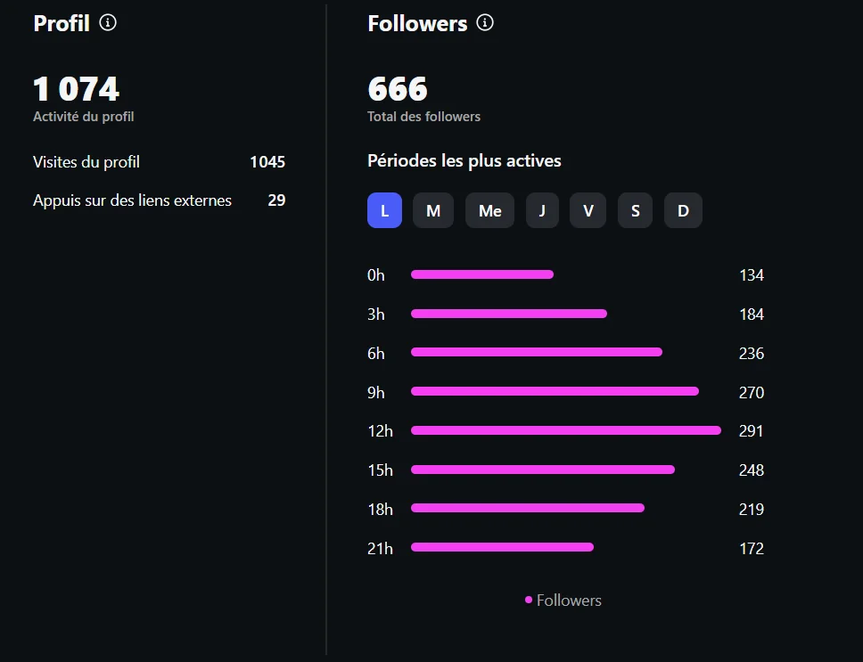
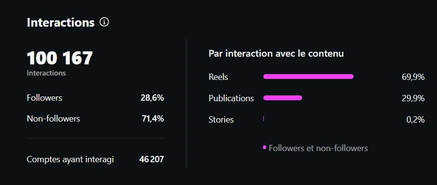

Réseaux Sociaux
@shmunk1_
Compte fan dédié au rappeur Yeat (plus de 700K vues, 750+ abonnés). Je publie des contenus éditoriaux : analyses d'albums, actualités, opinions sur les sorties. L'objectif est de créer une communauté francophone autour de l'artiste avec un format proche du journalisme musical.
Objectif
Créer une communauté francophone autour de l'artiste avec des contenus éditoriaux.
Mon rôle
Création et publication de l'ensemble des contenus : analyses d'albums, actualités et opinions.
Résultats
708K vues, 100K interactions et 750+ abonnés, sans aucune publicité payante.
Chiffres clés
Performances du compte
Contenus
Posts publiés





Analytiques
Captures des statistiques

Stats 01
Portée des contenus
708 744 vues sur l'ensemble des publications, avec 86.1% provenant de comptes non-abonnés (portée organique). Les contenus dépassent largement la communauté existante et circulent en dehors du compte.

Stats 02
Croissance des abonnés
750+ abonnés construits depuis le lancement du compte, uniquement par la régularité des publications et la qualité éditoriale, sans aucune publicité payante.

Stats 03
Interactions
100 167 interactions générées (likes, commentaires, partages, sauvegardes), dont 71.4% en provenance de non-abonnés. Un taux d'engagement élevé qui confirme la pertinence des sujets traités.